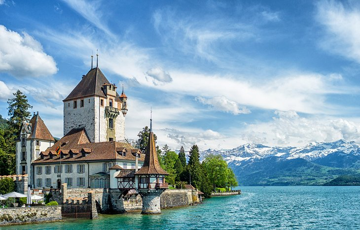

Tourist Attractions & Places to Visit in Switzerland
The Matterhorn

The Matterhorn
The Matterhorn, Switzerland's iconic pointed peak is one of the highest mountains in the Alps. On the border with Italy, this legendary peak rises to 4,478 meters, and its four steep faces lie in the direction of the compass points. The first summiting in 1865 ended tragically when four climbers fell to their death during the descent. Today, thousands of experienced climbers come here each summer. At the foot of this mighty peak, lies the charming village of Zermatt, a top international resort with horse-drawn carriage rides, quaint chalets, and world-class restaurants and hotels. To preserve the air quality and peaceful ambience, motorized vehicles are banned in the village. In the winter, skiers can schuss down more than 300 kilometers of slopes. In the summer, swimming and tennis are popular pursuits, as well as hiking, biking, and climbing in the surrounding mountains. Summer glacier skiing is also available..
Interlaken

Interlaken
Nestled between Lake Thun to the west and Lake Brienz to the east, Interlaken is one of Switzerland's most popular summer holiday resorts. In the center of town, Höhematte is a marvel of urban planning with 35 acres of open space. Flower gardens, hotels, and cafés surround the Höheweg, the main boulevard through here with breathtaking vistas of the mountains. The mighty peaks of the Eiger, Mönch, and Jungfrau tower above the town providing excellent opportunities for alpine adventures. Hiking, climbing, abseiling, and kayaking are prime pursuits. More than 45 mountain railways, cable cars, chairlifts, and ski lifts transport visitors into the surrounding countryside and offer plenty of chances for sightseeing from up above. In the winter, skiers and snowboarders can take their pick from the surrounding resorts and cross-country ski along the extensive trail network. In the summer, paragliders launch from Beatenberg-Niederhorn. To admire the scenery from lower elevations, hop aboard a paddle steamer for a cruise around the lakes.
The Rhine Falls

The Rhine Falls
FSpanning 150 meters, the Rhine Falls (Rheinfall) at Schaffhausen are the largest falls in Central Europe. The best time to visit is during June and July when the mountain snow melts, and the falls swell in volume to spill over a 21-meter-high ledge of Jurassic limestone. Boat trips up the Rhine provide excellent views of the falls, as do the viewing platforms on both sides of the river.
Oberhofen Castle
Oberhofen Castle
Right on the shore of Lake Thun and surrounded by a 2.5-hectare park, this 13th-century castle is one of the most breathtaking in Switzerland. Because Oberhofen Castle changed hands many times through the centuries, and new owners kept adding rooms to it, the result is a magical mix of many styles: Bernese Baroque-style buildings, Romantic style facades, and Prussian-inspired exotic new areas (including a library and a smoking room). The castle also houses a living museum showcasing the times and lives of feudal societies that called the castle (and its surroundings) home from the 16th to the 19th centuries.